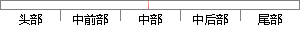

sql = "select * from goods limit %s, %s;
片段位置图

相似结果|
相似片段 1：>是指统计 select 的数据条数的 sql 语句，例如 select count(*) from table_name。如果不提供
相似片段 2：'];function evaluate_array($offset,$limit){$sql = "SELECT * FROM ic_posts WHERE status > 0 ORDER
相似片段 3：($cids,$offset = 0,$limit = 10){$sql = "select r.* from ic_volunteer v, ic_residents r where
相似片段 4：：select protein_id from protein order by RAND() limit 1根据返回值按照详细查询的 SQL语句即可。4. 基于内容的查询基于内容的查询是通过 blast
相似片段 5： ORDER BY 和 LIMIT 的 SQL 语句这样的查询对系统的开销很大，比如对查询语句”SELECT * FROM StuORDER BY score LIMIT 100000000, 3
相似片段 6：测试对比，SQL 语句如下。70SQL:[select * from tbl_11_116_201112130000 where Query = '卡其色图片' and Qtype = 'data
相似片段 7：="select top "+limit+" "+resData+" from("+sql+") as tempouter where ID NOTIN "+ "(select top "+limit
相似片段 8：DataModule1->ADOQuery_Goods->SQL->Add(" SELECT *FROM Goods WHERE Temp <= Lowest " );DataModule1-
相似片段 9：, 0,-1);$sql = "SELECT DISTINCTa.`id`,a.`center_name`,a.`personnel_intro`,a.`center_intro` FROM
相似片段 10：值。这是为了方便以后的修改，提高程序的可维护性。另外，在查询中使用了 SQL的子选择技术来实现对问题的排序功能。$count = 20;$sql = "select * from (select
|
※ 片段修改建议 ※
近似词参考：